Total: 104. baseline better: 7 | ocr_v4 better: 8 | tied: 89
| Image | Question | baseline | ocr_v4 | GT (10 references) | Δ |
|---|---|---|---|---|---|
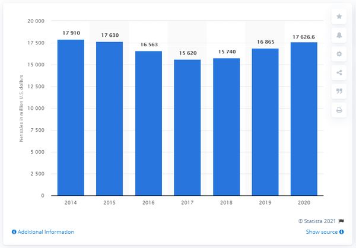 | chart_qa: What is the net sales of General Mills wordwide in 2018(in million U.S. dollars)? | 15740 (0.33) | 17910 (0.00) | 15740 | -0.33 |
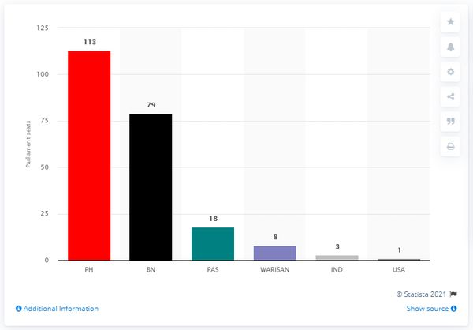 | chart_qa: Which country has the least amount of seats? | USA (0.33) | Ind (0.00) | USA | -0.33 |
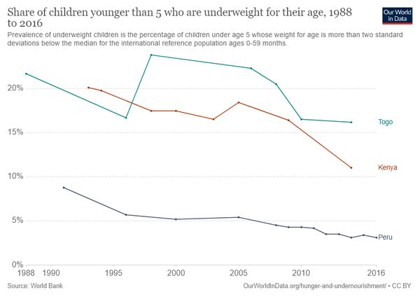 | chart_qa: What percentage of Nigeria's GDP did the oil sector contribute in the first months of 2021? | 9.25 (0.33) | 7.3 (0.00) | 9.25 | -0.33 |
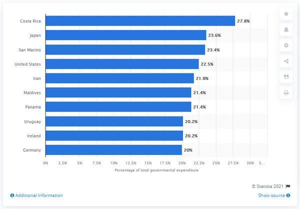 | chart_qa: What is the percentage value of total government expenditure in Country Japan ? | 23.6 (0.33) | 26.9 (0.00) | 23.6 | -0.33 |
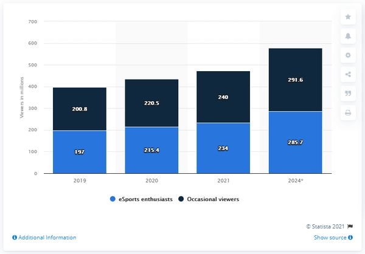 | chart_qa: Which viewer type does of the upper bar in the stacked bars represent? | Occasional viewers (0.33) | Ocasional viewers (0.00) | Occasional viewers | -0.33 |
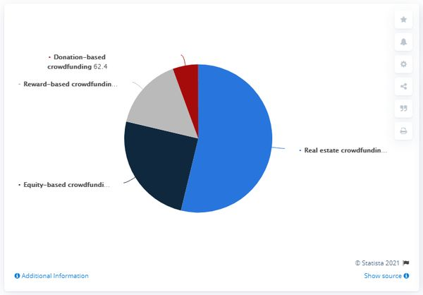 | chart_qa: What 2 slices make up over 75% of the crowdfunding total? | [Equity-based crowdfunding, Real estate crowdfunding] (0.33) | [Reward-based crowdfunding, Equity-based crowdfunding] (0.00) | [Equity-based crowdfunding, Real estate crowdfunding] | -0.33 |
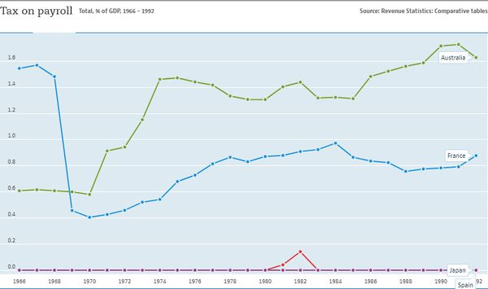 | chart_qa: Which country is represented by blue color line? | France (0.33) | Australia (0.00) | France | -0.33 |
| Image | Question | baseline | ocr_v4 | GT (10 references) | Δ |
|---|---|---|---|---|---|
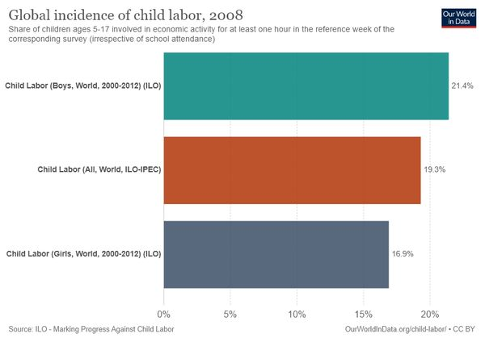 | chart_qa: How many masjids were associated with Deobandi in 2017? | 59 (0.00) | 797 (0.33) | 797 | +0.33 |
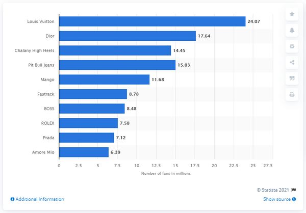 | chart_qa: What was the average annual wine consumption per resident in the United States in 2018? | 2.94 (0.00) | 2.95 (0.33) | 2.95 | +0.33 |
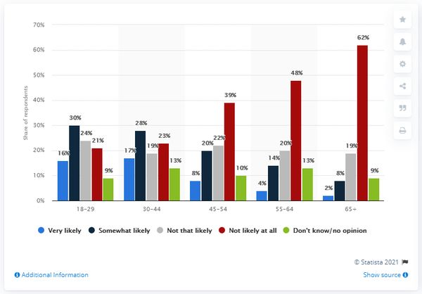 | chart_qa: What was the average passenger revenue per passenger-mile in 2018? | 41.7 (0.00) | 40.7 (0.33) | 40.7 | +0.33 |
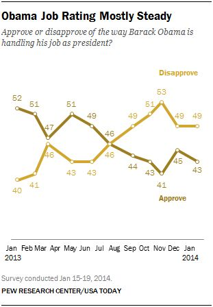 | chart_qa: How many Macy's branded stores did Macy's operate in 2020? | 55 (0.00) | 572 (0.33) | 572 | +0.33 |
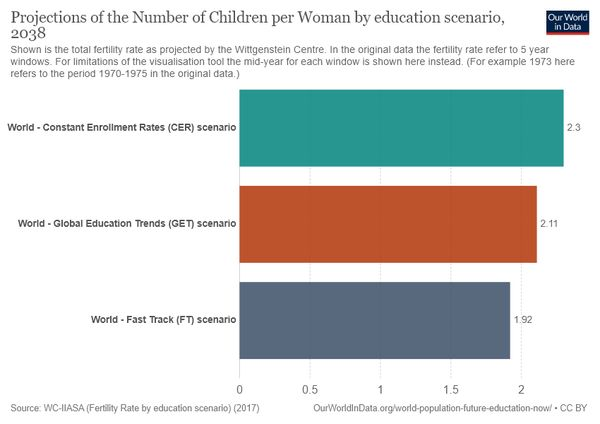 | chart_qa: What is the projected number of children per women in the Fast Track scenario? | 1.52 (0.00) | 1.92 (0.33) | 1.92 | +0.33 |
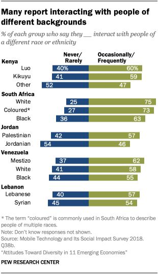 | chart_qa: What's the percentage value of the topmost green bar? | 57 (0.00) | 60 (0.33) | 60 | +0.33 |
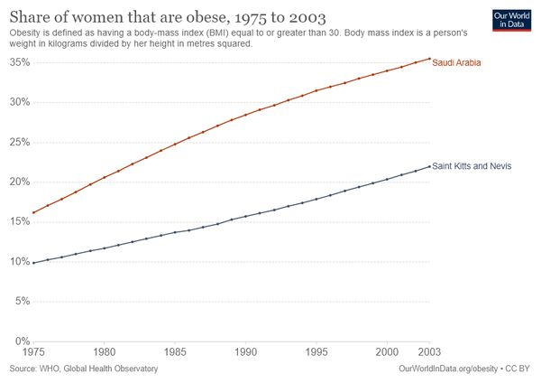 | chart_qa: Is the value of the blue graph constantly increasing? | No (0.00) | Yes (0.33) | Yes | +0.33 |
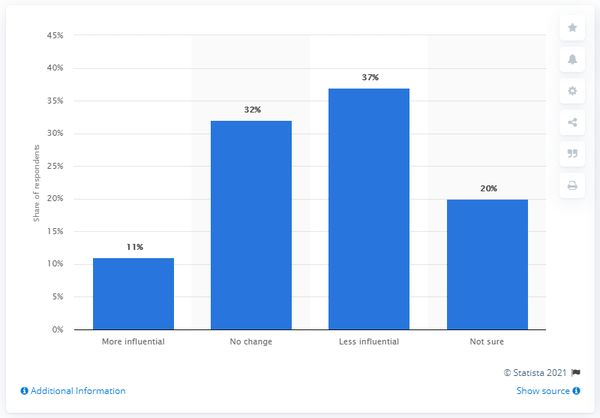 | chart_qa: What was the maximum monthly search volume? | 81.1 (0.00) | 90.22 (0.33) | 90.22 | +0.33 |